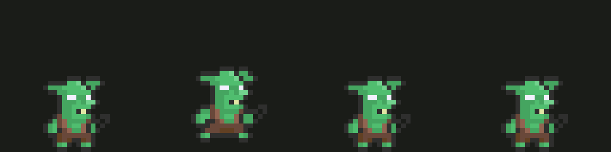
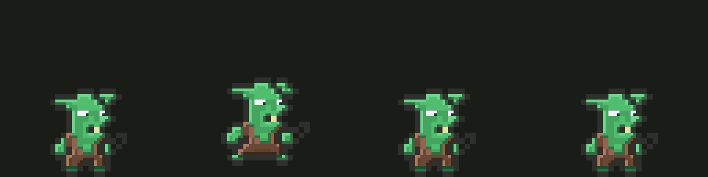
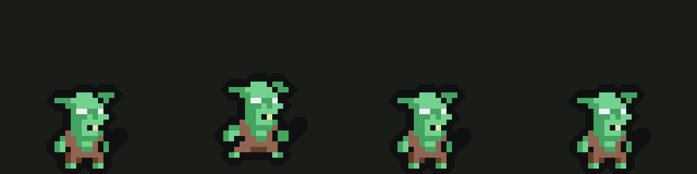
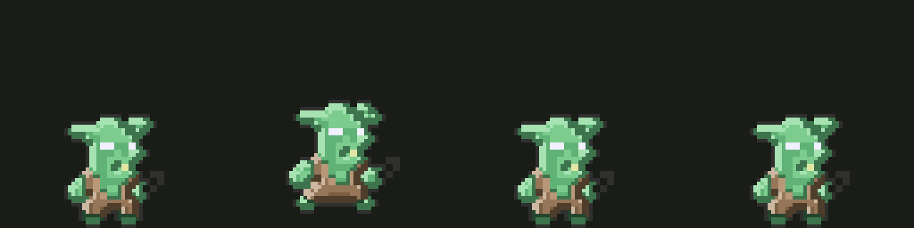
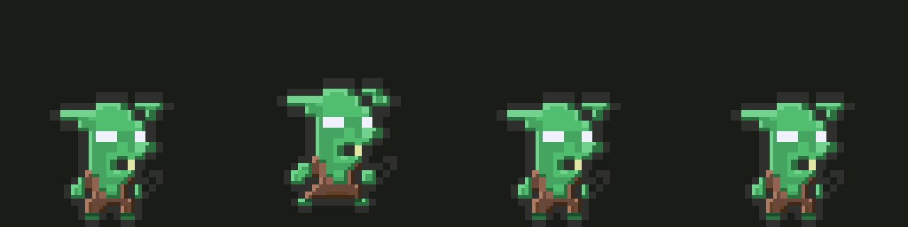
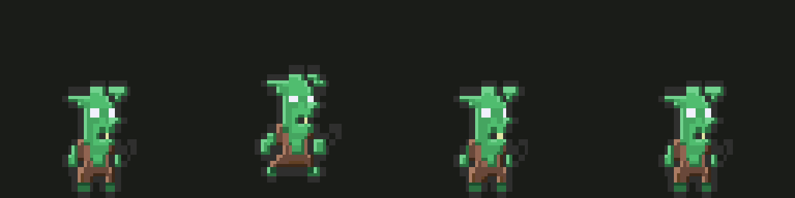
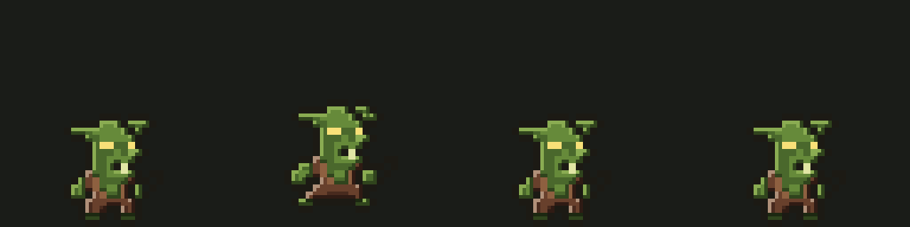
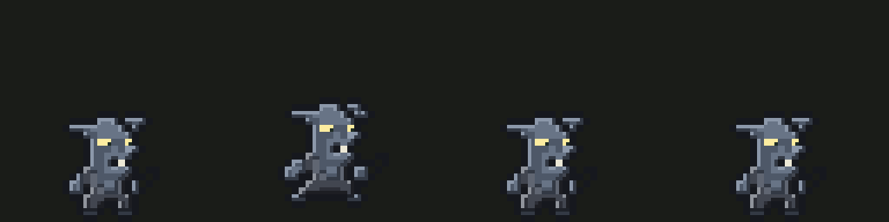
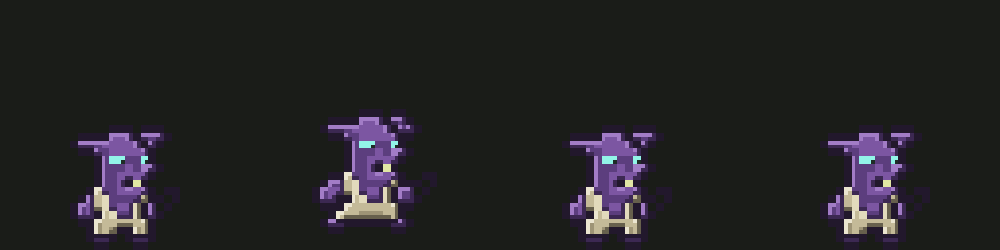
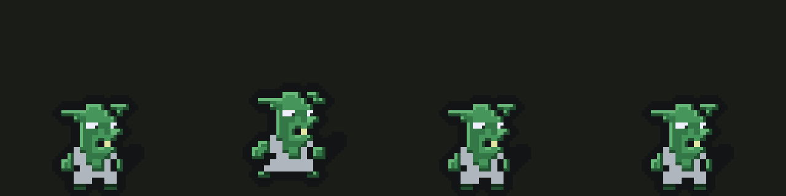

Goblin — 10 versoes diferentes
Colunas: parado · andando · batendo · levando pancada.
Todas usam a animacao do goblin original, quadro a quadro.
V01 — O original, so dobrado de tamanho (referencia)

V02 — O original com luz, sombra e pupila

V03 — Cores chapadas e contorno preto grosso

V04 — Sem contorno nenhum, pele clara

V05 — Cabeca 35% maior (proporcao de mascote)

V06 — Alto e magro, 18% mais esticado

V07 — Pele oliva, presas maiores, pintura de guerra

V08 — Pele de pedra cinza, olho amarelo, textura pontilhada

V09 — Pele roxa, panos de osso, olho ciano

V10 — Pano virou placa de metal, contorno grosso
